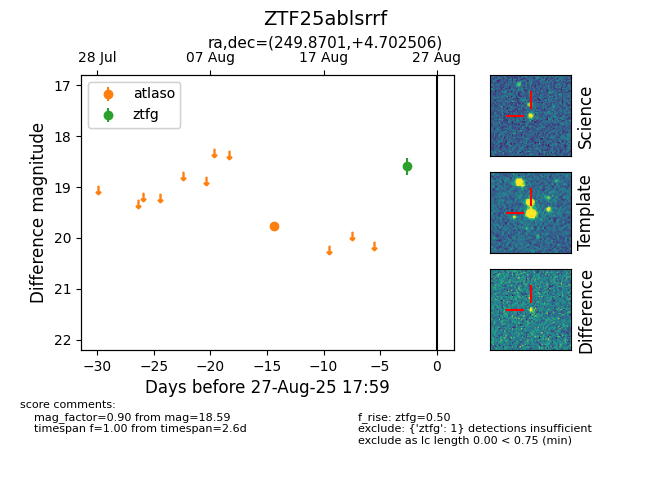

Target ZTF25ablsrrf at 2025-08-27 17:59, see:
FINK: fink-portal.org/ZTF25ablsrrf
Lasair: lasair-ztf.lsst.ac.uk/objects/ZTF25ablsrrf
ALeRCE: alerce.online/object/ZTF25ablsrrf
alt names
ZTF25ablsrrf (ztf,fink)
coordinates:
equatorial (ra, dec) = (249.8701,+4.70251)
galactic (l, b) = (21.1425,+31.35474)
photometry
last atlaso=19.76, ztfg=18.59
1 atlaso, 1 ztfg detections
